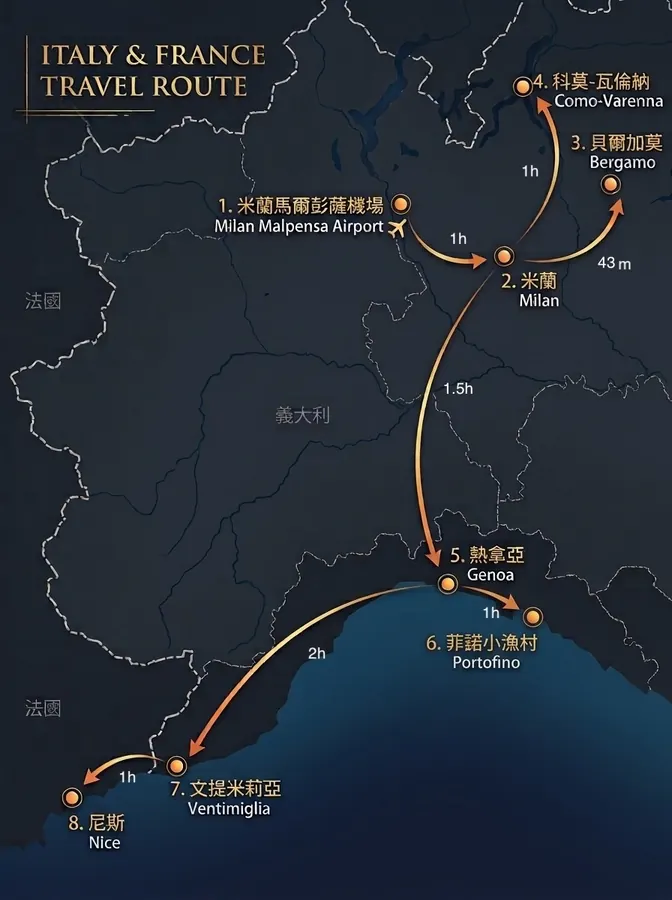
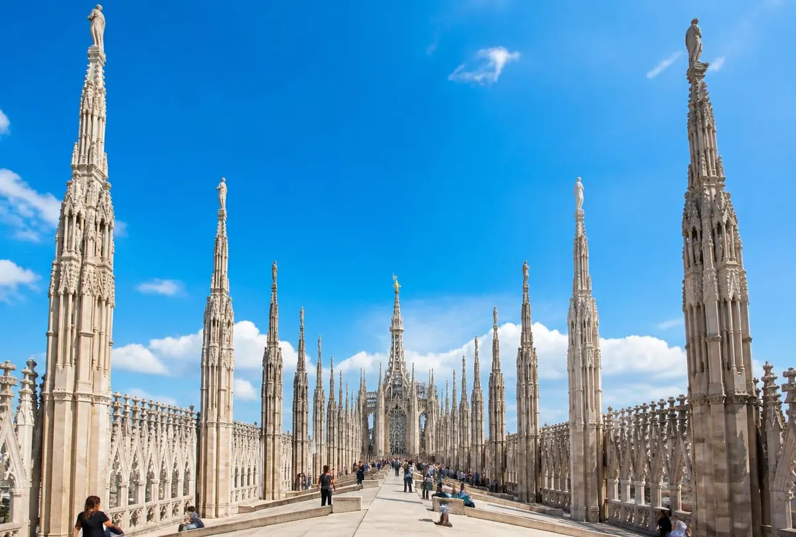
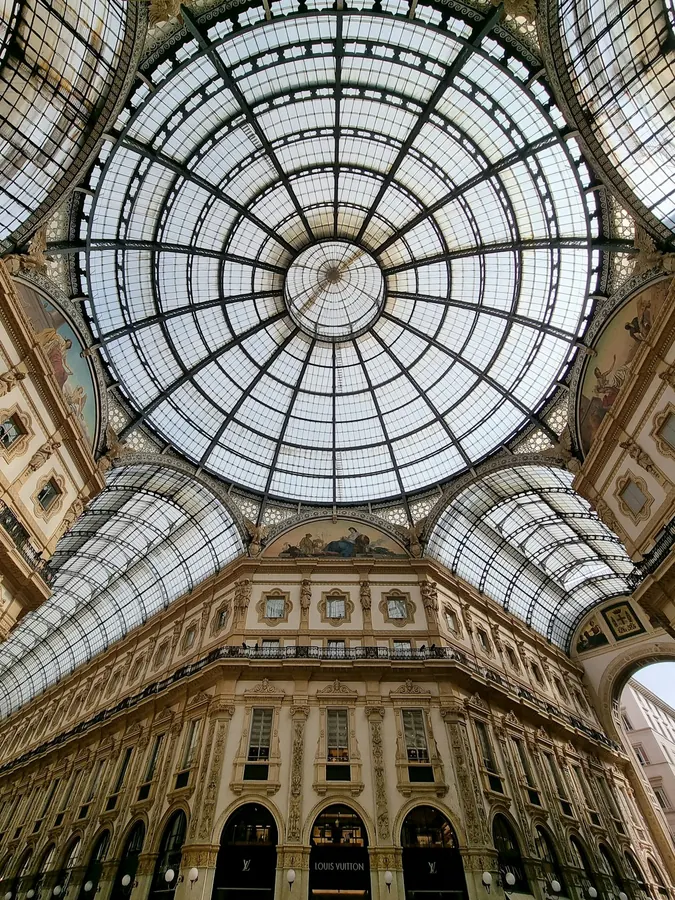
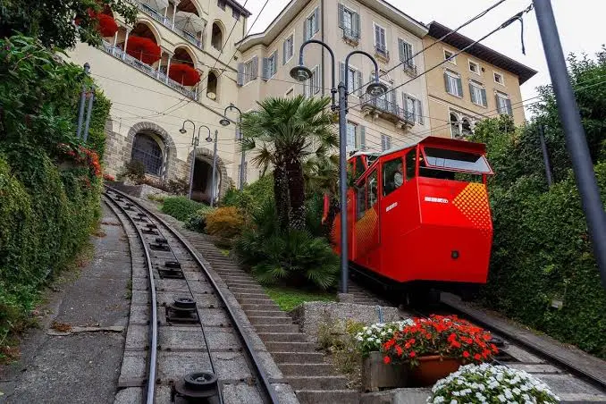
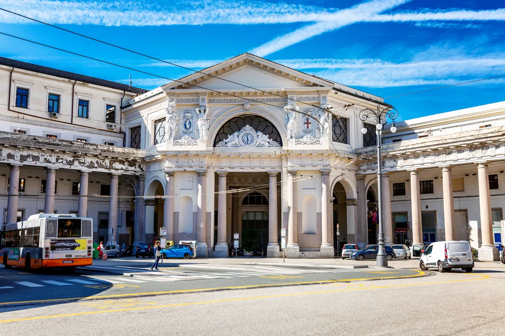
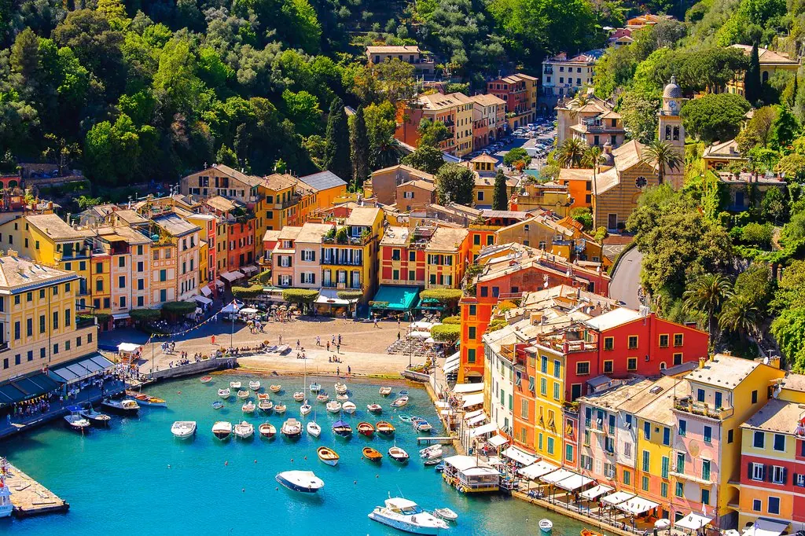
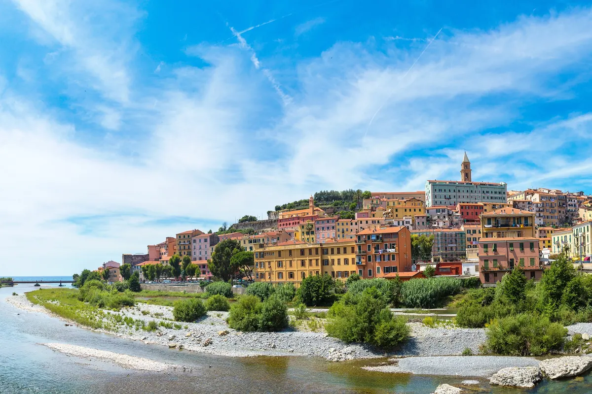
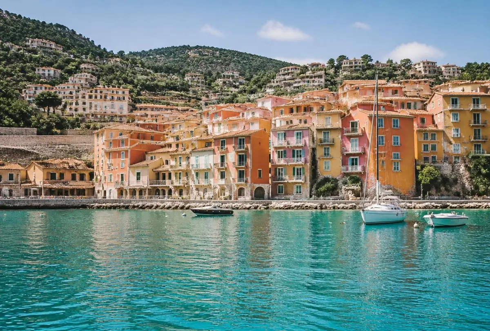
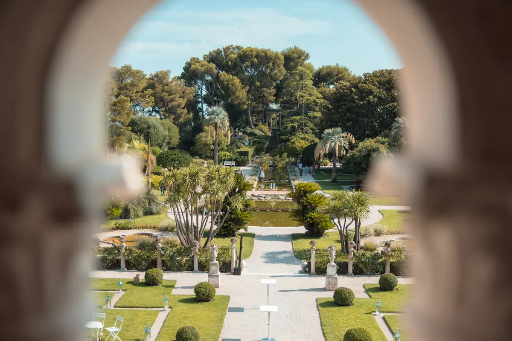
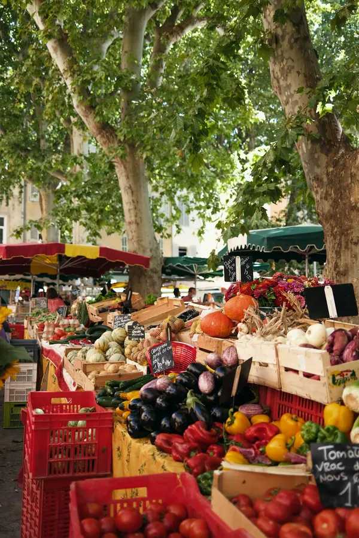

北義 × 南法蔚藍海岸 15 日慢旅全景動線
米蘭 · 貝爾加莫 · 科莫湖 · 熱那亞 · 菲諾港 · 尼斯 · 摩納哥／費拉角全景巡禮

✦ 慢活大動線：米蘭（連住 4 晚）➔ 貝爾加莫 ➔ 科莫湖 ➔ 熱那亞（連住 3 晚）➔ 菲諾港 ➔ 尼斯（連住 5 晚）✦
依照 index.html 官方完整文案核定 · 行程地圖與景點照片放大排版 · TRAVEL EURO 典雅蔚藍與金色手冊

| 日期／天數 | 路線行程／通票名稱 | 車次／工具 | 時間／效期 | 取票型態與動作指引（膠囊標籤） |
|---|---|---|---|---|
| 10/16 D02 | 米蘭機場 ➔ 米蘭中央車站 | MXP 2951 快線 | 16:11 ➔ 17:07 (56 分) |
免換直通持 Trenord APP Wallet QR 掃閘門進站， 乘車前確認 Check-in |
| 10/16 D02 | 米蘭城市通票（Milano Card） | 實體感應卡 | 抵達領取 (連續 24h) |
需現場兌換抵達後於中央車站遊客中心出示憑證領卡 |
| 10/17 D03 | 米蘭 M1–M3 地鐵／復古電車 | 市區大眾運輸 | 首刷起算 (24 小時有效) |
需感應開通進地鐵閘門首拍啟用通票，全日無限搭乘 |
| 10/18 D04 | 米蘭 ➔ 貝爾加莫（去程） | RE 2219 快車 | 09:05 ➔ 09:53 (48 分直達) |
免換直通出示 Trenord APP Wallet QR 供查驗，免打卡 |
| 10/18 D04 | 貝爾加莫 24h 交通通票 | ATB 巴士與纜車 | 24 小時連續 | 搭車前手動啟用ATB APP 已經購票,需在手機上啟用後使用 |
| 10/18 D04 | 貝爾加莫 ➔ 米蘭（回程） | RE 2232 快車 | 15:02 ➔ 15:50 (48 分直達) |
免換直通出示手機 Trenord APP Wallet QR 供列車長查驗，免打卡 |
| 10/19 D05 | 米蘭 ➔ 瓦倫納（科莫湖） | RE 2818 快車 | 09:20 ➔ 10:25 (65 分直達) |
免換直通湖區直達車，出示手機 Trenord APP Wallet QR 碼即可 |
| 10/19 D05 | 科莫湖中央湖區渡輪一日票 | 渡輪 (瓦倫納↔貝拉焦) | 當日無限次 | 碼頭檢票瓦倫納渡輪碼頭窗口出示憑證或購票登船 |
| 10/19 D05 | 莫納斯特羅別墅（Villa Monastero） | 湖畔古典花園 | 午後彈性參觀 | 現場購票入口售票處現場購票（花園門票約 €10，約 350 台幣） |
| 10/19 D05 | 瓦倫納 ➔ 米蘭（回程區間車） | 區域快車 (彈性) | 約 15:35 前後 (約 1 小時) |
⚠️ 上車必打卡 需現場購票 窗口買紙票，月台黃機打戳印！ |
| 10/20 D06 | 米蘭中央 ➔ 熱那亞王子廣場 | IC 659 一等艙 | 09:10 ➔ 10:40 (1 小時 30 分) |
對號免打卡持預印 A4 紙本依車廂與座位直接入座 |
| 10/21 D07 | 熱那亞城市通票 24h (紙本條碼) | Genova City Pass | 24 小時有效 | 需掃碼開通出示憑證啟用，含 AMT 地鐵公車與宮殿優惠 |
| 日期／天數 | 路線行程／通票名稱 | 車次／工具 | 時間／效期 | 取票型態與動作指引（膠囊標籤） |
|---|---|---|---|---|
| 10/22 D08 | 熱那亞 ➔ 聖瑪格麗塔（去程） | IC 657 一等艙 | 09:47 ➔ 10:14 (27 分) |
對號免打卡持預印 A4 紙本對號車票直接入座 |
| 10/22 D08 | MetDaily 一日票（菲諾港公車） | AMT 782 公車 | 24 小時有效 | 需 APP 購票於 AMT APP 購買 ＋ 搭車前啟用 |
| 10/22 D08 | 聖瑪格麗塔 ➔ 熱那亞（回程） | IC 674 一等艙 | 15:46 ➔ 16:14 (27 分) |
對號免打卡持預印 A4 紙本對號車票直接入座 |
| 10/23 D09 | 熱那亞 ➔ 文提米利亞邊境 | IC 633 一等艙 | 08:58 ➔ 10:58 (2 小時) |
對號免打卡持預印 A4 紙本對號車票直接入座 |
| 10/23 D09 | 文提米利亞 ➔ 尼斯城（跨國） | ZOU! / TER 列車 | 約 15:00 前後 (54 分) |
⚠️ 上車必打卡 需邊境購票 售票機買紙票，上車前於黃機打卡！ |
| 10/24 D10 | PASS SUD AZUR EXPLORE | 南法通票感應卡 | 10/24–10/26 (彈性開通) |
需車站領卡憑證領實體卡 ＋ 每趟感應搭乘搭輕軌公車拍 Validé 柱 |
| 10/25 D11 | 尼斯城 ↔ 濱海自由城 | TER 懸崖景觀車 | 彈性班次 (約 7 分鐘) |
持通票搭乘PASS SUD AZUR 感應卡直接進站 |
| 10/26 D12 | 尼斯 ↔ 費拉角半島 | 15 號海濱公車 | 車程約 25 分 | 持通票搭乘上車刷 PASS SUD AZUR 感應卡 |
| 10/26 D12 | 羅斯柴爾德花園別墅門票 | 粉紅宮殿門票 | 10:30 音樂噴泉 | 現場購票入口售票處現場購票 一人約600台幣 |
| 10/28 D14 | 尼斯市區 ➔ 尼斯機場 T2 | 輕軌 L2 機場線 | 車程約 25 分 | 需購票／拍卡售票機買單程票 €1.70 或刷 PASS SUD AZUR |









| 日期 | 支出項目／商家名稱 | 消費類別 | 金額 (€) | 支付方式 | 退稅單 |
|---|---|---|---|---|---|
| / | 餐飲 · 交通 · 購物 | € | 現金 / 刷卡 | ☐ | |
| / | 餐飲 · 交通 · 購物 | € | 現金 / 刷卡 | ☐ | |
| / | 餐飲 · 交通 · 購物 | € | 現金 / 刷卡 | ☐ | |
| / | 餐飲 · 交通 · 購物 | € | 現金 / 刷卡 | ☐ | |
| / | 餐飲 · 交通 · 購物 | € | 現金 / 刷卡 | ☐ | |
| / | 餐飲 · 交通 · 購物 | € | 現金 / 刷卡 | ☐ | |
| / | 餐飲 · 交通 · 購物 | € | 現金 / 刷卡 | ☐ | |
| / | 餐飲 · 交通 · 購物 | € | 現金 / 刷卡 | ☐ | |
| / | 餐飲 · 交通 · 購物 | € | 現金 / 刷卡 | ☐ | |
| / | 餐飲 · 交通 · 購物 | € | 現金 / 刷卡 | ☐ | |
| / | 餐飲 · 交通 · 購物 | € | 現金 / 刷卡 | ☐ | |
| / | 餐飲 · 交通 · 購物 | € | 現金 / 刷卡 | ☐ | |
| / | 餐飲 · 交通 · 購物 | € | 現金 / 刷卡 | ☐ | |
| / | 餐飲 · 交通 · 購物 | € | 現金 / 刷卡 | ☐ | |
| / | 餐飲 · 交通 · 購物 | € | 現金 / 刷卡 | ☐ |